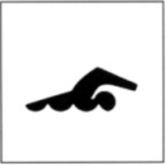
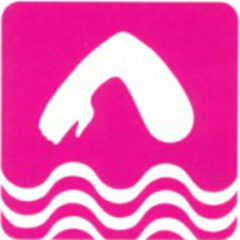
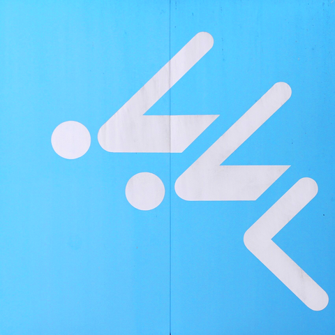
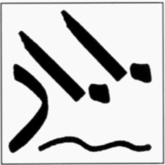
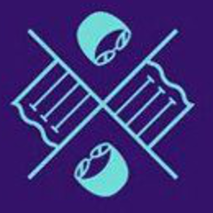

Un segno solo, un’indicazione ampia: il pittogramma del nuoto vale per tutte le gare in vasca. In un buon pittogramma linee e pieni sono bilanciati tra loro, e anche il peso delle linee va bilanciato da un segno all’altro. Icone d’interfaccia: Lucide (ISC).A single sign, a broad indication: the swimming pictogram stands for every pool event. In a good pictogram, lines and solids are balanced with each other, and line weight must be balanced from one sign to the next. Interface icons: Lucide (ISC).Un seul signe, une indication large : le pictogramme de la natation vaut pour toutes les épreuves en bassin. Dans un bon pictogramme, traits et pleins sont équilibrés entre eux, et le poids des traits doit être équilibré d’un signe à l’autre. Icônes d’interface : Lucide (ISC).一个符号，一个宽泛的指示：游泳象形图代表泳池里的所有比赛。好的象形图中，线条与实心块彼此平衡，各个符号之间的线条粗细也要平衡。界面图标：Lucide（ISC）。